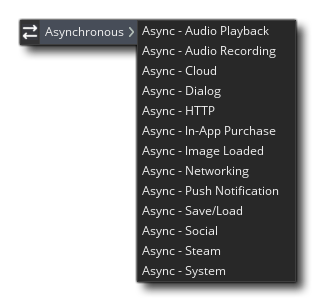

 Un evento asíncrono es uno que se dispara cuando GameMaker Studio 2 recibe una "devolución de llamada" de alguna fuente externa, que puede ser desde la web o desde el dispositivo que ejecuta su juego. Básicamente, le dice a GameMaker Studio 2 que haga algo, como cargar una imagen, y comenzará a hacer esto, pero continuará haciendo lo que sea que tenga que hacer mientras funciona. Luego, cuando la solicitud se haya completado, se enviará una devolución de llamada a GameMaker Studio 2 y se disparará cualquier evento asíncrono definido para ese tipo de devolución de llamada. Tenga en cuenta que los eventos asíncronos se activan para todas las instancias que los tienen, al igual que los eventos clave, por lo que puede hacer una http_get llamar en una instancia, sin embargo, tener el evento HTTP asíncrono en otro para hacer frente a la devolución de llamada.
Hay varios tipos de eventos asociados con la categoría de eventos asíncronos, y todos se explican en las siguientes secciones:
Este evento solo puede ser activado por las funciones de reproducción de la cola de audio y devolverá un ds_map almacenado en la variable async_load, que contiene diferentes pares clave / valor relacionados con la cola de audio que ha activado el evento. El evento se activa cuando ha seleccionado una cola de audio para reproducir y un búfer en esa cola de audio ha terminado de reproducirse.
Las siguientes claves estarán disponibles en ds_map:Dado que se puede crear una cola de audio a partir de múltiples búferes, este evento se puede desencadenar varias veces para una cola a medida que se llega al final de cada sección de audio con búfer, de ahí la clave "buffer_id".
- " queue_id ": el índice de cola para la cola que ha terminado de reproducirse, como lo devuelve la función audio_create_play_queue.
- " buffer_id " - el ID de búfer para el búfer que ya no se reproduce desde
- " queue_shutdown ": se establece en 0 durante la reproducción normal y 1 cuando se recibe el evento porque audio_free_play_queue ha sido llamado. Cuando se configura en 1, no desea poner en cola ningún otro dato.
NOTA: La variable async_load Sólo es válido en los eventos asíncronos, ya que el ds_map es decir, se crea un punto al inicio del evento, y luego se elimina de nuevo al final, con esta variable restablecida a un valor de -1. Sin embargo, todas las estructuras de datos adicionales creadas a partir del evento deben limpiarse utilizando las funciones apropiadas.
En el ejemplo de uso que se da a continuación, crearemos una cola de audio con 10 sonidos de audio con búfer agregados y luego reproduciremos la cola:audio_queue = audio_create_play_queue(buffer_s16, 11052, audio_mono);
for (var i = 0; i < 10; i++;)
{
audio_queue_sound(audio_queue, audio_buffer[i], 0, buffer_get_size(audio_buffer[i]));
}
audio_play_sound(audio_queue, 0, true);
Cada paso del juego ahora que se detecta la grabación desencadenará un evento de grabación de audio asíncrono en el que puede tratar con la entrada grabada algo como esto:var queue = async_load[? "queue_id"];
var num = 0;
if queue = audio_queue
{
for (var i = 0; i < 10; i++;)
{
if async_load[? "buffer_id"] == audio_buffer[i]
{
buffer_seek(audio_buffer[i], buffer_seek_start, 0);
num = i;
}
}
if num == 9
{
audio_stop_sound(audio_queue);
audio_free_play_queue(audio_queue);
}
}
Aquí verificamos el ID de la cola y, si es el que queremos, verificamos el ID del búfer para ver qué búfer ha terminado de reproducirse. Luego, también establecemos una var local para ese valor de índice para su comprobación posterior y establecemos el búfer de nuevo para el inicio de ese sonido. Una vez que nuestra variable local llega a 9, lo que indica que la cola ha finalizado, dejamos de reproducir el sonido y liberamos la cola.
Este evento solo puede ser activado por el audio_start_recording() función y devolverá un ds_map almacenado en la variable async_load, que contiene diferentes pares clave / valor dependiendo de la devolución de llamada de la función que ha activado el evento.
Las siguientes claves estarán disponibles en ds_map:
- " buffer_id ": el ID del búfer temporal que puede usar para recuperar los datos de audio
- " channel_index ": el índice del canal de grabación devuelto por la función de llamada de la que provienen estos datos
- " data_len ": la longitud de los datos (en bytes) que ha recibido
NOTA: Como se mencionó al inicio de esta página, la variable async_load Sólo es válido en los eventos asíncronos, ya que el ds_map es decir, se crea un punto al comienzo del evento y luego se elimina de nuevo al final. Sin embargo, tenga en cuenta que el búfer temporal en el que se almacena todo el audio con el mapa también se eliminará al final del evento, por lo que debe copiarlo en un búfer personalizado si desea conservarlo para su uso posterior.
En el siguiente ejemplo de uso, crearemos un búfer personalizado para almacenar nuestro audio grabado y también configuraremos nuestro juego para grabar desde la fuente de entrada 0:channel_index = audio_start_recording(0);
audio_buffer = buffer_create(len, buffer_fast, 1);
Cada paso del juego ahora que se detecta la grabación desencadenará un evento de grabación de audio asíncrono en el que puede tratar con la entrada grabada algo como esto:var channel = async_load[? "channel_index"];
if channel == channel_index
{
len = async_load[? "data_len"];
buffer_copy(async_load[? "buffer_id"], 0, len, audio_buffer, 0);
}
Aquí simplemente verificamos la clave "channel_index" para asegurarnos de que coincida con el valor devuelto cuando comenzamos a grabar, y si lo hace, copiamos el contenido del búfer temporal creado para este evento en nuestro búfer personalizado. Después de eso, puede hacer lo que quiera con el búfer personalizado: puede reproducirlo utilizando las funciones de audio del búfer dedicado, puede procesarlo y enviarlo a través de la red, puede guardarlo en el disco... Una vez que tenga su audio grabado En un búfer, puedes hacer básicamente lo que quieras.
El Evento en la Nube es uno que se activa por la devolución de llamada de uno de los cloud_ funciones, como cloud_synchronise. En realidad genera un ds_map esto es exclusivo de este evento y se almacena en la variable especial async_load (consulte las funciones individuales para ver ejemplos de código que explican el uso de este evento con más detalle). Este ds_map tiene la siguiente estructura:El significado exacto de la entrada del mapa "estado" devuelto se explica en la siguiente tabla:
- "estado": contiene el código de estado, donde un valor negativo denota un error, cuya descripción se incluirá en el "errorString". Un valor de 0 (o un valor positivo) indica un éxito (consulte a continuación los valores exactos), y la "cadena de resultados" contendrá los datos devueltos o un mensaje de éxito.
- "id": el id que se devolvió de la función llamada. Si disparas una serie de cloud_ las solicitudes, entonces necesita saber a cuál le está respondiendo, por lo que usaría este valor para comparar con el valor que almacenó cuando envió originalmente la solicitud para encontrar la correcta.
- "description": la descripción del último archivo cargado.
- "resultString": contiene una cadena que es el blob de datos devuelto desde la nube.
- "errorString": devuelve una cadena de error para cualquier error.
Valor de estado errorString / resultString Descripción -1 errorString = "No se ha iniciado sesión en <SERVICE>" You have not successfully logged in to the given Cloud Service 0 resultString = datos recuperados New game data downloaded from the cloud (following a cloud_synchronise call) 1 resultString = "AlreadySynchronized" No new data since you last called cloud_synchronise 2 resultString = "ConflictDeferral" A conflict was encountered, but the gamer chose to ignore it 3 resultString = "GameUploadSuccess" data from cloud_string_save or cloud_file_save was successfully uploaded to the cloud -n errorString = Descripción del error Any other negative number means a synchronisation failure
Al igual que los eventos anteriores, el evento Diálogos solo se desencadena cuando recibe una llamada de una de las funciones asíncronas especiales del usuario, como get_login_async() (Consulte esta función para ver un ejemplo de código extendido de cómo se usa este evento). Estos eventos son los que solicitan algún tipo de información del usuario, que puede ser un nombre, detalles de inicio de sesión, un número o un color, etc. Como la mayoría de los dispositivos no les gusta sentarse en un bucle esperando una respuesta, tienen que: ser asíncrono y GameMaker Studio 2 continuará ejecutándose en segundo plano mientras estas funciones tengan un diálogo abierto y hasta que obtengan la entrada del usuario requerida que activa este evento.
De nuevo, un ds_map se devuelve con el ID en la variable especial async_load. Los valores que se conservan en este mapa dependerán de la función utilizada, y debe consultar las entradas individuales de cada función en este manual para obtener más detalles.
El evento HTTP es uno que se activa por la devolución de llamada de uno de los http_ funciones, como http_post_string. En realidad genera un ds_map (a veces conocido como "diccionario") que es exclusivo de este evento y se almacena en la variable especial async_load (Consulte las funciones individuales para obtener ejemplos de código que explican el uso de este evento con más detalle). Esta ds_map Tiene la siguiente estructura:Eso es para cuando usas el http_post_string() función, pero cada uno de los http_ las funciones pueden devolver un mapa ligeramente diferente, por lo tanto, consulte la entrada manual de cada función para conocer los datos precisos que se le devuelven.
- "id": el id que fue devuelto desde el comando. Si disparas una serie de http_ las solicitudes, entonces necesita saber a cuál le está respondiendo, por lo que usaría este valor para comparar con el valor que almacenó cuando envió originalmente la solicitud para encontrar la correcta.
- "estado": devuelve un valor inferior a 0 para un error, 0 para éxito y 1 si el contenido se está descargando.
- "resultado": los datos recibidos (solo cadena), o la ruta al archivo descargado si ha usado http_get_file().
- "url": la URL completa que solicitó.
- "http_status": el código de estado http sin procesar (si está disponible). Esto devuelve el código de estado web estándar para la mayoría de los navegadores, por ejemplo: 304 para "No modificado" o 204 para "Sin contenido", etc.
NOTA: Como async_load crea un ds_map, estas funciones son particularmente útiles cuando se combinan con el json_encode y json_decode funciones
También puede haber datos adicionales proporcionados por este mapa si ha solicitado archivos para descargar. En este caso, el "estado" tendrá un valor de 1 y el ds_map contendrá estas claves adicionales:Tenga en cuenta que el evento no se activará para cada paquete de datos que se reciba, sino que se actualizará en cualquier momento durante la descarga dentro del bucle principal del juego. También tenga en cuenta que actualmente esta funcionalidad solo está disponible para las plataformas de destino normales de Windows.
- "contentLength": es el tamaño del archivo que el servidor web ha dicho que debe esperar recibir (puede ser -1 si el servidor no devuelve estos datos).
- "sizeDownloaded": el tamaño de los datos que ya se han descargado.
Este evento solo puede activarse cuando hayas activado las compras en la aplicación para tu juego. Si tiene esta funcionalidad agregada, entonces el evento se activará en las siguientes circunstancias:El evento siempre creará un especial. ds_map con una identificación de índice almacenada en la variable incorporada iap_data. Este mapa siempre contendrá la clave " tipo ", que contendrá uno de los siguientes valores constantes:
- El estado de la tienda cambia.
- Un producto (o productos) ha sido activado.
- El producto y las compras han sido restaurados.
- Un producto ha sido comprado.
- Se ha consumido un producto.
Constante Descripción iap_ev_storeload Esto se activa cuando se detecta un cambio en el almacén de la plataforma de destino. iap_ev_product Este evento se activa cuando se activa un producto y contendrá información adicional sobre el producto. iap_ev_restore Este evento solo se activa cuando se usa el iap_restore_all función. iap_ev_purchase Cuando una compra se ha completado, este evento se activa. iap_ev_consume Cuando usas la función iap_consume se dispara este evento.
Cada uno de estos posibles "tipos" de evento agregará claves adicionales a la iap_data ds_map, que luego puede analizarse para obtener la información de compra o producto necesaria. El contenido exacto de la iap_data mapa se enumeran a continuación para cada evento "tipo".Cuando active sus compras, su juego intentará ponerse en contacto con la tienda objetivo, lo que provocará este evento en el proceso. los iap_data entonces el mapa tendrá una clave de adición " estado", que tendrá una de las siguientes constantes como valor:
Constante Descripción iap_storeload_ok La tienda ha sido contactada y la conexión es buena. iap_storeload_failed Se ha producido un error de conexión o, por algún motivo, la tienda no está disponible.
Todas las compras activadas activarán este "tipo" de evento, pero solo una vez por compra, así que si ha activado diez productos, debe esperar que este evento se active diez veces. Si ha recibido este evento, el iap_data ds_map mantendrá la clave " índice " adicional que contiene la cadena de ID de producto única para el producto que se está activando. A continuación, puede utilizar la función iap_product_details junto con esta identificación del producto para obtener más información.NOTA: Google Play ( Android ) solo puede solicitar detalles de los productos 20 a la vez, lo que puede llevar a tiempos de carga bastante largos para aplicaciones con un número significativo de productos.
Cuando llamas a la función iap_restore_all activará este evento, agregando una clave de " resultado " a la iap_data ds_map. Esta tecla mantendrá bien true o false para indicar si los datos de compra se han restaurado correctamente desde la tienda de destino.
Al solicitar una compra utilizando la función. iap_acquire este tipo de evento se activará. los iap_data ds_map tendrá la clave " índice " adicional que contiene el valor de ID de compra único para el producto que se está comprando. A continuación, puede utilizar la función iap_purchase_details junto con este ID de compra para obtener más información.NOTA: Si el producto comprado es consumible, entonces debe usarse usando iap_consume antes de una nueva compra se puede hacer.
Al usar la función iap_consume este tipo de evento se activará. los iap_data ds_map tendrá la clave adicional " producto " que contiene la cadena de ID de producto única para el producto que se consume.
Este evento se activa cuando carga una imagen en GameMaker Studio 2, siempre y cuando haya utilizado una URL o ruta válida con la función de carga del archivo correspondiente. Por ejemplo, digamos que desea cargar una imagen de sprite, y solo cambie el sprite actual para la instancia a la nueva cuando se haya cargado. Bueno, tendrías algo como esto en un evento crear o un evento de alarma (por ejemplo):spr = sprite_add("http://www.angusgames.com/game/background1.png", 0, false, false, 0, 0);
Ahora comenzará a cargar la imagen en el dispositivo o en el navegador, pero no bloqueará GameMaker Studio 2 mientras espera a que se cargue el archivo. En cambio, GameMaker Studio 2 seguirá funcionando normalmente hasta que la imagen se cargue y la devolución de llamada active el evento Image Loaded, donde ds_map Se crea y almacena en la variable especial async_load. El mapa contiene la siguiente información:
- "nombre de archivo": la ruta completa al archivo que solicitó.
- "id": el ID del recurso que ha cargado. Esta será la misma que la variable a la que ha asignado el recurso.
- "estado": devuelve un valor inferior a 0 para un error.
A continuación, asignará la imagen recién cargada a un fondo en este evento. Lo anterior también es válido para sprites y sonidos, con un ds_map generado para cada uno de estos recursos como se muestra arriba, y el siguiente ejemplo de código demuestra cómo se usaría la información devuelta en este evento:
if ds_map_find_value(async_load, "id") == spr
{
if ds_map_find_value(async_load, "status") >= 0
{
sprite_index = spr
}
}El código anterior primero verificará la identificación del ds_map que se ha creado, luego verificará el estado de la devolución de llamada. Si el valor es mayor o igual a 0 (señalización exitosa), el resultado de la devolución de llamada se utilizará para establecer el índice de fondo a la imagen recién cargada.
El evento de red es uno que se activará por cualquier tráfico de red entrante y está vinculado a las funciones de red. Este evento genera un ds_map especial que es exclusivo de este evento y se almacena en la variable especial async_load. Esta ds_map Contendrá información diferente dependiendo del tipo de evento de red que lo generó.Las siguientes teclas son comunes a todas las funciones de red recibidas y siempre estarán presentes en el async_load mapa:Los valores de retorno posibles para la tecla "tipo" pueden ser cualquiera de las tres constantes enumeradas a continuación:
- "tipo": tendrá una de las constantes enumeradas a continuación como valor de retorno y designa el tipo de evento de red.
- "id": el id del socket (un número real, como lo devuelve la función network_create_server o network_create_socket ) que está recibiendo el evento. En la mayoría de los casos, el ID de socket devuelto es el ID de TCP o UDP socket que activó el evento; sin embargo, si el evento se activa en un servidor y es un evento de datos (ver más abajo), el ID de socket es el del cliente que envió el datos.
- "ip": la dirección IP del socket (como una cadena).
- "puerto": el puerto asociado con la dirección IP (útil cuando se trabaja con UDP).
Constante Descripción network_type_connect El evento fue desencadenado por una conexión. network_type_disconnect El evento fue desencadenado por una desconexión. network_type_data El evento fue activado por los datos entrantes. network_type_non_blocking_connect El evento fue activado por una conexión configurada como no bloqueante (puede usar la función network_set_config() para esto).
Cuando tengas un evento del tipo network_type_connect, network_type_non_blocking_connect o network_type_disconnect, la async_load El mapa tendrá las siguientes teclas adicionales:Vale la pena señalar que el Evento de red no se activa en los clientes cuando el servidor se desconecta, y que ninguno de los network_type_* los eventos se activarán en los clientes cuando el servidor al que están conectados se desconecte, incluso si la conexión se basa en TCP.
- "socket": esta tecla mantendrá la conexión / desconexión del ID de socket.
- "exitoso": esta clave será 0 o 1, donde 0 significa que la conexión se agotó y 1 significa que tuvo éxito y que el socket está listo para usar.
Cuando usted tiene una network_type_data escriba evento, que significa que su red ha recibido datos, el mapa creado tendrá las siguientes claves:
- "búfer": este es el único "id de búfer" generado por el evento. Se crea un búfer de tipo "crecer", byte alineado a 1, para contener el id. Debe almacenarse en una variable y usarse para todas las demás llamadas de función al búfer en este evento. Al igual que el async_load mapa, el búfer creado se elimina automáticamente de la memoria al final de este evento. Para obtener más información sobre los buffers, consulte Referencia - Buffers.
- "tamaño": este es el tamaño (en bytes) de los datos del búfer que se están recibiendo.
NOTA: El búfer creado solo es válido en estos eventos y se liberará cuando finalice el evento.
El evento de notificación de inserción es uno que es activado por la devolución de llamadas desde notificaciones de inserción en el sistema operativo del dispositivo, ya sea desde una fuente local que usa la función push_local_notification, o desde una fuente remota (es decir, su servidor). Genera un ds_map esto es exclusivo de este evento y se almacena en la variable especial async_load (consulte las funciones individuales que activan eventos asíncronos para obtener ejemplos de código que explican el uso de este evento con más detalle). Esta ds_map tiene las siguientes teclas:Puede haber entradas de clave adicionales basadas en el "tipo" devuelto y el valor de "estado". Para "estado", si se ha devuelto un error ("0"), también tendrá la siguiente clave:
- "tipo": el valor puede ser "local" para una notificación local del dispositivo, "remoto" para una notificación remota o "registro" para el registro de notificaciones remotas.
- "estado": el valor será "1" para el éxito o "0" para un error.
Si el valor de "estado" es 1 (es decir, sin errores), entonces el ds_map contendrá los siguientes valores adicionales, dependiendo del valor de la clave "tipo":
- "error": contiene detalles del error recibido.
Para entenderlo mejor, hemos creado un pequeño fragmento de ejemplo a continuación para que lo veas. En este ejemplo, enviaremos una notificación de inserción local utilizando el siguiente código:
- "reg_id": si el "tipo" recibido fue "registro", esta tecla mantendrá la identificación de registro del dispositivo para notificaciones remotas.
- "datos": si el "tipo" recibido fue "local" o "remoto", esta clave mantendrá la carga útil de la cadena que definió cuando llamó a la función de notificación.
var fireTime = date_inc_day(date_current_datetime(), 1);
var data = "daily_reward";
push_local_notification(fireTime, "Ahoy!", "Catch The Haggis Has A Present", data);
Esto establecerá un temporizador para "enviar" una notificación al dispositivo cuando haya pasado un día. Cuando termine el día, si su juego está en segundo plano o no se está ejecutando, se mostrará una notificación al usuario con el título y el mensaje dados (en iOS, se muestra el nombre del juego y se ignora el título), y luego Se llamará un evento de notificación push asíncrono. Tenga en cuenta que si el juego está en primer plano cuando llega la hora de la notificación, no se mostrará, pero el evento asíncrono todavía se activará. En el caso de que usted maneje la devolución de llamada algo como esto:var type = ds_map_find_value(async_load, "type");
var status = ds_map_find_value(async_load, "status");
if status == 0
{
//error of some kind
var error = ds_map_find_value(async_load, "error");
show_debug_message("error=" + string(error));
}
else
{
if type == "register"
{
global.reg_id = ds_map_find_value(async_load, "reg_id");
}
else
{
var data = ds_map_find_value(async_load, "data");
if data == "daily_reward"
{
global.Gold += 1000;
}
}
}
Este evento se activará mediante ciertas funciones relacionadas con la carga y el almacenamiento de búferes en archivos, así como al cargar o descargar audio de la memoria. El evento en sí contendrá el construido en async_load Mapa DS que se rellenará con las teclas necesarias para la función específica. Estos se enumeran en las secciones a continuación.Cuando usas las funciones buffer_save_async() o buffer_load_async() un evento asíncrono se activará cuando se haya completado la transferencia de datos. Este evento poblará el async_load mapa con los siguientes pares clave / valorEsto le permite encuestar el progreso de guardado / guardado y mostrar un mensaje o cambiar de sala, etc. cuando se complete el proceso.
- "id": el ID de la función asíncrona tal como lo devuelve la función utilizada.
- "estado": volverá true si los datos fueron guardados / cargados correctamente, y false de otra manera.
Cuando trabaje con grupos de audio, puede cargarlos y descargarlos de la memoria usando las funciones audio_group_load() y audio_group_unload(). Al usar la función de carga, activará este evento cuando el conjunto completo de archivos de audio establecidos para el grupo se haya cargado en la memoria y llenará el mapa con los siguientes pares clave / valor:Cuando todo el audio se ha cargado para un grupo, este evento se activará y luego se podrá usar para cambiar de habitación, reproducir una pista de música, etc.
- "tipo": esto nos dice el tipo de evento al que se llama y será " audiogroup_load "para cargar audio.
- "group_id": devolverá el ID del grupo de audio que se ha cargado (como se define en el Editor de grupo de audio ).
Este evento solo puede ser activado por las diversas funciones sociales específicas y devolverá un ds_map almacenado en la variable async_load, que contiene diferentes pares clave / valor en función de la devolución de llamada de la función que ha activado el evento.
El ds_map contendrá una serie de claves, la más importante de las cuales es la clave " id ". Esto devolverá una constante que luego puede verificarse en el código para determinar cuál de las muchas devoluciones de llamada ha recibido el evento. Una vez que haya analizado esta clave y comparado el valor devuelto con las constantes disponibles, puede continuar extrayendo el resto de la información del mapa.Las páginas de funciones en Juego social - Logros y tablas de clasificación en la sección Referencia detallan las funciones y las devoluciones de llamada, así como las constantes utilizadas para desencadenar este evento, pero también hay ciertas circunstancias en las que se activará sin una llamada de función del juego que Esta corriendo:
- cuando su juego se inicia desde el panel de control del sistema operativo
- cuando completes un reto
- cuando otro jugador completa un desafío
- cuando el juego se inicia desde el panel del sistema operativo seleccionando un desafío
Cualquiera de las devoluciones de llamada anteriores activará el Evento social y un async_load el mapa se generará con los siguientes detalles (tenga en cuenta que hay un valor de clave "id" diferente para definir cada una de las diferentes razones por las que se llamó al evento, pero todos los demás contenidos del mapa son los mismos):
A continuación puede encontrar un pequeño fragmento de código como ejemplo de uso:
- " id ": el valor de esta clave dependerá del tipo de devolución de llamada que active el evento. Puede ser una de estas constantes:
- achievement_challenge_received - Se ha recibido un reto.
- achievement_challenge_completed - Se ha completado un desafío.
- achievement_challenge_completed_by_remote - Un desafío ha sido completado por el otro jugador.
- achievement_challenge_launched - El juego se lanzó desde el panel del sistema operativo con el desafío dado.
- " playerid " - La identificación del jugador para el desafío.
- " issuerid ": el id de la persona que emitió el desafío.
- " estado ": el estado del desafío, que tendrá un valor de 0 - 3 (como una cadena) para inválido, pendiente, completado o rechazado.
- " mensaje " - El mensaje de texto para desafío.
- " issuedate " - La fecha de emisión para impugnación
- " completeddate ": la fecha de finalización del desafío.
- " tipo " - El tipo de desafío dado. Puede ser una de las dos constantes:
- achievement_type_score_challenge - Un desafío basado en el valor de puntuación.
- achievement_type_achievement_challenge - Un reto basado en un logro.
- " identificador " - La cadena de identificación para el desafío.
- " puntaje ": el puntaje vinculado al desafío.
var ident = ds_map_find_value(async_load, "id" );
if ident == achievement_challenge_completed;
{
player_id = ds_map_find_value(async_load, "playerid");
issuer_id = ds_map_find_value(async_load, "issuerid");
state = ds_map_find_value(async_load, "state");
date_completed = ds_map_find_value(async_load, "completeddate");
date_issued = ds_map_find_value(async_load, "issueddate");
ach_type = ds_map_find_value(async_load, "type");
ach_ident = ds_map_find_value(async_load, "identifier");
ach_score = ds_map_find_value(async_load, "score");
}
Algunas de las funciones de Facebook activarán un evento social asíncrono y crearán un ds_map Con alguna información específica. La información devuelta dependerá del "tipo" de evento que se haya llamado. Puede verificar esto leyendo la tecla "tipo" en ds_map, que será la siguiente cadena para un evento de Facebook:
- " facebook_permission_request "
Cuando el evento se activa y es de este tipo, también habrá claves adicionales que se pueden verificar:
- " requestId ": el valor de ID de solicitud devuelto por el facebook_request_xxx_permission() Función que desencadenó el evento.
- " resultado ": esta será una de las siguientes cadenas:
- " concedido ": los permisos fueron aceptados por el usuario
- " denegado ": uno o más permisos no fueron aceptados por el usuario
- " error " - ocurrió un error
- "error ": contendrá una descripción del error, pero solo estará presente cuando " result " = " error ".
Este evento solo puede ser activado por las funciones de la API de Steam y devolverá un ds_map almacenado en la variable async_load, que contiene diferentes pares clave / valor dependiendo de la devolución de llamada de la función que ha activado el evento. El mapa siempre contendrá la clave " event_type ", que luego se puede analizar para encontrar el tipo de función que activó el evento y cambiar el código requerido para adaptarse.
Al llamar a cualquier función que active este evento, generará un valor de ID asíncrono único que debe almacenarse en una variable y verificarse, como async_load el mapa siempre contendrá una clave de identificación que luego podrá analizar y asegurarse de que está respondiendo al evento correcto. De hecho, el mapa siempre contendrá las siguientes teclas, independientemente de la función Steam utilizada para generar la respuesta asíncrona:
- " id ": el ID asíncrono devuelto por la función que activó el evento
- " resultado ": el resultado de la operación (un valor real). Esta será la constante GML ugc_result_success o algún otro número real. Por lo tanto, debe verificar esta constante para asegurarse de que la llamada fue exitosa y, de lo contrario, algo no ha funcionado correctamente. El resto de los valores posibles devueltos se muestran como el resultado del valor "EResult" de Steam y debería ver steamclientpublic.h en los encabezados del SDK para los 89 valores posibles.
- " event_type " - Una cadena que denota el tipo de evento (ver más abajo para más detalles)
Cuando se usan las funciones de Steam para cargar una tabla de clasificación (ya sea steam_upload_score() o steam_upload_score_buffer() ) El retorno ds_map Tendrá los siguientes pares clave / valor:Puede ver ejemplos de esto en las páginas para las funciones de carga de puntuación.
- " event_type ": esta clave mantendrá el valor " leaderboard_upload "
- " post_id ": esta clave debe coincidir con el valor de ID devuelto por la función de carga de llamadas
- " lb_name ": esta clave contiene el nombre de la tabla de clasificación que se envió a
- " success " - Será 1 si la publicación tuvo éxito, 0 falló
- " actualizado ": será 1 si la puntuación de la tabla de clasificación se actualizó realmente (es decir, la nueva puntuación fue mejor) o 0 de lo contrario
- " puntuación ": esta tecla contiene la puntuación que se publicó.
Cuando se utilizan las funciones de Steam para descargar una tabla de clasificación ( steam_download_scores(), steam_download_scores_around_user() o steam_download_friends_scores() ) El retorno ds_map Tendrá los siguientes pares clave / valor:Mostraremos un ejemplo de cómo funciona la descarga de datos de puntuación al solicitar los diez primeros puestos para la tabla de clasificación determinada y al analizar sus resultados en el Evento Async de Steam (para cargar ejemplos, consulte las páginas de funciones correspondientes). Para empezar necesitamos solicitar los puntajes con el siguiente código:
- " event_type ": esta clave mantendrá el valor " leaderboard_download "
- " id ": esta clave debe coincidir con el valor de ID devuelto por la función de descarga de llamadas
- " estado ": el estado de la devolución de llamada, donde -1 equivale a una falla o no se devolvió ningún resultado, y 0 equivale a un éxito.
- " lb_name ": esta clave contiene el nombre de la tabla de clasificación que se envió a
- " numEntries ": el número de "filas" de datos de la tabla de clasificación que se devuelven.
- " entries " - Una cadena de objeto JSON que contiene otro ds_map, que contendrá la clave "default" (lo que significa que no hay resultados dentro) o la clave "entries", de la que puede obtener el valor. este valor devuelto para "entradas" será un ds_list que contiene cada uno de los rangos de la tabla de clasificación, donde cada entrada en la lista se referirá a otra ds_map que contendrá las claves "nombre", "puntuación" y "rango", y también puede contener una clave de "datos" dependiendo de la función utilizada para cargar.
score_get = steam_download_scores("Game Scores", 1, 10);
Esto enviará una solicitud al Servidor Steam para obtener las puntuaciones de la tabla de clasificación "Puntuaciones del juego", almacenando el ID asíncrono de la solicitud en la variable "score_get". Esto se manejará en el evento Steam Async de la siguiente manera:var async_id = ds_map_find_value(async_load, "id");
if async_id == score_get
{
var entries = ds_map_find_value(async_load, "entries");
var map = json_decode(entries);
if ds_map_exists(map, "default")
{
ds_map_destroy(map);
exit;
}
else
{
var list = ds_map_find_value(map, "entries");
var len = ds_list_size(list);
var entry;
for(var i = 0; i < len; i++;)
{
entry = ds_list_find_value(list, i );
steam_name[i] = ds_map_find_value(entry, "name");
steam_score[i] = ds_map_find_value(entry, "score");
steam_rank[i] = ds_map_find_value(entry, "rank");
if (ds_map_exists(entry, "data"))
{
var data = ds_map_find_value(entry, "data");
var buffId = buffer_base64_decode(data);
var message = buffer_read(buffId, buffer_string);
show_debug_message( " -- attached message: " + string(message));
buffer_delete(buffId);
}
ds_map_destroy(entry);
}
ds_list_destroy(list)
}
ds_map_destroy(map)
}
Lo que hacemos aquí es primero comprobar la clave "id" de la especial async_load mapa. Si este valor es el mismo que el valor de la función de devolución de llamada original (almacenada en la variable "score_get"), continuamos procesando los datos. Lo primero que hacemos es analizar el async_load ds_map para las "entradas" clave que contendrán un objeto JSON que contiene los datos de la tabla de clasificación. Este objeto JSON se decodifica (ver json_decode ) como otro ds_map, y este nuevo ID de mapa se almacena en la variable "mapa".
Este mapa se comprueba para la clave "predeterminada" y si se encuentra, se destruye el mapa y se sale del evento. Si no se encuentra una clave "predeterminada", el código analizará el mapa para extraer la información necesaria sobre la tabla de clasificación, extrayendo primero un ds_list de la clave de "entradas" del ds_map, y luego repasando cada entrada de la lista para obtenga otro ds_map con el nombre, puntaje y rango de cada entrada. Estos valores luego se almacenan en arreglos y luego verificamos si hay una clave de "datos" adicional. Si existe (es decir, la puntuación se cargó con un paquete de datos adicional), entonces también lo analizamos y lo enviamos a la consola del compilador para su depuración, antes de destruir el búfer y luego continuar destruyendo el mapa. Tenga en cuenta que si se incluye la clave de "datos", debe decodificarse utilizando el buffer_base64_decode() antes de que se pueda leer correctamente.
Una vez que el bucle ha finalizado, la lista de entradas se destruye al igual que el mapa del que se tomó. No hay necesidad de destruir el async_load ds_map ya que esto lo maneja GameMaker Studio 2.
Cuando se usan las funciones de Steam para descargar contenido generado por el usuario (UGC), varios de ellos activarán este evento. Sin embargo, cada función generará un async_load ds_map con diferentes pares clave / valor (aunque siempre contendrán las claves generales " id ", " result " y " event_type "), así que consulte la página específica de la función que se está usando para obtener detalles y ejemplos.
El evento Steam Async también se puede activar cuando un usuario se suscribe a un elemento fuera del juego; por ejemplo, se separan de un navegador y se suscriben a un nuevo elemento y luego regresan al juego. En estos casos los async_load el mapa solo contendrá los siguientes detalles (y ninguno de los valores predeterminados que figuran en la parte superior de esta página):El evento Steam Async también se puede activar cuando se suscribe un elemento del taller, ya sea desde dentro de la aplicación o desde un navegador del taller, y en estos casos el async_load El mapa contendrá los siguientes pares clave / valor:
- " event_type ": esta clave mantendrá el valor " ugc_item_installed "
- " publish_file_id ": el ID del elemento UGC recién instalado (puede usar la función steam_ugc_get_item_install_info() para obtener la ruta al elemento instalado)
El evento se activará en caso de que también se cancele la suscripción de cualquier elemento, con el mapa de DS que contenga lo siguiente:
- " event_type ": esta clave mantendrá el valor " ugc_item_subscribed" "
- " publish_file_id ": esta clave tiene el ID de archivo publicado del artículo recién suscrito
- " event_type ": esta clave mantendrá el valor " ugc_item_unsubscribed" "
- " publish_file_id ": esta clave tiene el ID de archivo publicado del elemento no suscrito
Este evento solo puede ser activado por un evento a nivel del sistema (como la detección de un gamepad o el inicio de sesión automático en XBox Live) y devolverá un ds_map almacenado en la variable async_load, que contiene diferentes pares clave / valor en función del evento a nivel del sistema que activó la devolución de llamada.
Cuando este evento se activa para que un gamepad se conecte o desconecte, devolverá uno de los siguientes pares de clave / valor en el async_load mapa:
- " event_type ": el tipo de evento del sistema recibido, que será una de las siguientes cadenas:
- " gamepad descubierto ": sucede cuando el sistema informa que se ha conectado un nuevo gamepad
- " gamepad perdido ": sucede cuando el sistema ha perdido la conexión con un gamepad
- " pad_index ": el índice del pad que se ha agregado o eliminado
Este evento ahora le permite mover toda la lógica de verificación de su gamepad desde el Evento de Paso o un evento de Alarma al Evento del Sistema y solo ejecutarlo cuando sea realmente necesario.
Cuando se desencadena este evento para abrir o cerrar un teclado virtual, se devolverán los siguientes pares de clave / valor en el async_load mapa:
- " event_type ": el tipo de evento del sistema recibido, que será el " estado del teclado virtual " para los teclados virtuales.
- " screen_height ": la altura del teclado virtual (en píxeles). Esto será 0 si el teclado es invisible.
- " keyboard_status ": el estado actual del teclado, devuelto como una de las siguientes cadenas:
- "ocultación"
- "oculto"
- "demostración"
- "visible"
Vea aquí para más información sobre el teclado virtual.
El evento del sistema asíncrono se puede activar cuando se dirige a la XBox One utilizando la exportación de UWP y marcando la opción Activar XBox Live en las Opciones de juego de la UWP. Cuando inicie el proyecto de GameMaker Studio 2 UWP que tiene Xbox Live habilitado, el proyecto intentará automáticamente iniciar sesión de forma silenciosa en Xbox Live. Los resultados de este intento de inicio de sesión se devolverán como uno de los siguientes pares clave / valor en el async_load mapa:
- " event_type ": el tipo de evento del sistema recibido, que será una de las siguientes cadenas:
- " usuario iniciado sesión": el inicio de sesión silencioso del usuario se ha completado correctamente
- " inicio de sesión de usuario fallido ": el inicio de sesión silencioso del usuario ha fallado (cuando esto sucede, puede usar la función xboxlive_show_account_picker() para obtener el usuario para elegir una cuenta para iniciar sesión con)
- " usuario desconectado ": el usuario ha cerrado sesión
Para obtener más información sobre las funciones específicas disponibles para XBox Live, consulte aquí.